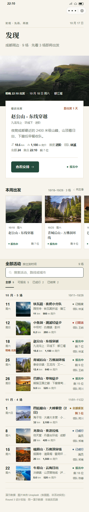
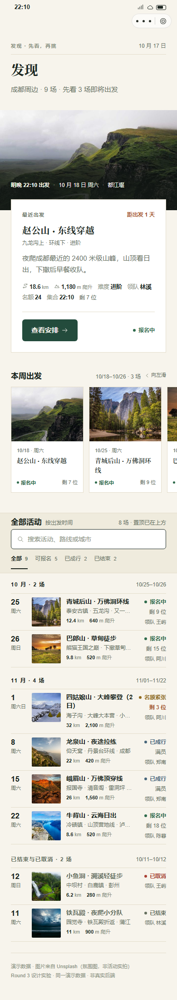
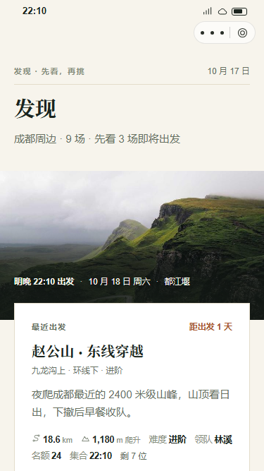
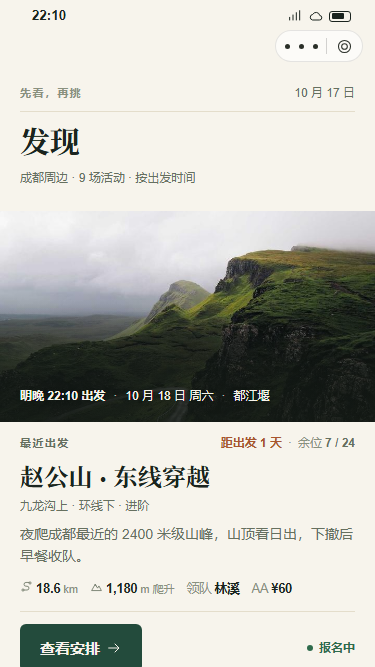
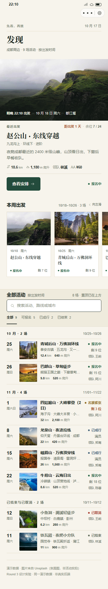
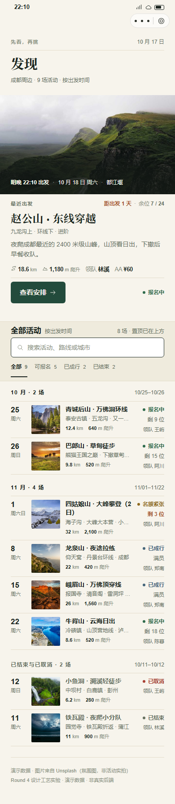
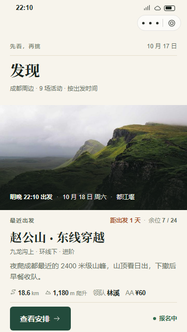
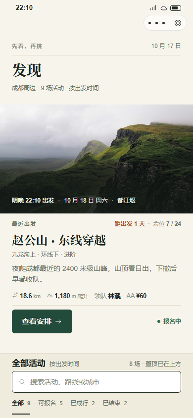
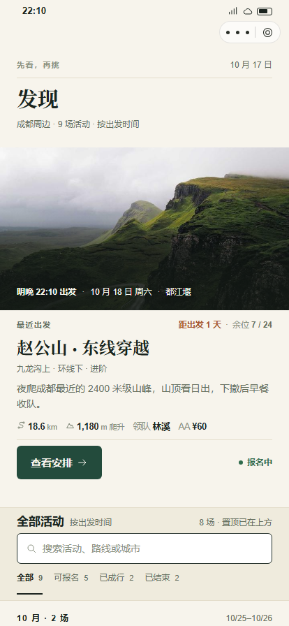

Experiment 01
先看未来，再看过去
默认列表不再以已结束 / 已取消活动开场；置顶活动不再在首屏重复三次。
首行：10/11 已结束 → 10/25 青城后山
a1 赵公山：3 次 → 2 次（E1 阶段，横滑仍在）
过去组置底：10/12 → 10/11
计数：8 场 · 置顶已在上方
基线 / before10/11 已结束、10/12 已取消先出现；a1 同时出现在主卡、横滑第 1 张、列表第 3 行。日期轴占三行。

改后 / after E1未来活动按出发时间升序；过去组独立置底并弱化；a1 只保留主卡与横滑；日期轴收为两行。

结论：保留。默认视图的信息顺序从「过去 → 未来」改为「未来 → 过去」，首屏无需越过两条已结束记录；去重规则只在默认视图生效，筛选 / 搜索仍返回完整结果集。
Experiment 02
主卡不再叠压，首屏先看到行动
白卡压图 24px 改为图下纸面；刊头压缩；距离 / 爬升 / 领队 / 费用与余位重新分组。
375 CTA：693–741 → 616–664（视口 667）
刊头：146 → 123
白卡信息板：337 → 0（图下纸面）
hero 标题：30 → 24
基线 / before · 375白卡压住主图下沿；CTA 693–741，底边超出 667 视口，首屏看不到完整按钮；刊头三行占 146px。

改后 / after E2 · 375主图下直接纸面信息；CTA 616–664 完整落在首屏内；「距出发 1 天 · 余位 7/24」进入 kicker 行；facts 收为一行。

结论：保留。叠压没有承担额外信息，只把 CTA 推离首屏；图下纸面保留编辑感，同时让主卡从「海报」回到「可行动的活动入口」。
Experiment 03
去掉没有承担发现任务的横滑轨
横滑 3 张与主卡、下方列表重复；移除后页面明显缩短，接缝筛选提前进入视野。
横滑区：272 → 0
390 全页截图：2104 → 1784（截图高度）
列表起点：1264 → 850
a1 全页出现：2 → 1
E2 阶段 / before E3主卡 → 横滑 3 张 → 接缝 → 列表；390 全页 2104px；a1 在主卡与横滑各一次。

改后 / after E3主卡 → 接缝 → 列表；390 全页 1784px；横滑轨的 JS / CSS / 变量一并移除；a1 全页只出现一次。

结论：保留删除。横滑区没有提供主卡与列表之外的新信息，却把真正的筛选 / 列表推迟约 414px；删除后「主卡 → 接缝 → 索引」成为一条连续路径。
Final
最终三视口
375 / 390 / 414 首屏：CTA 完整可见，无横向溢出；向下滚动后接缝带吸顶。
dom-check：38 PASS / 0 FAIL
0 console errors
CTA：375 616–664 / 390 625–673 / 414 638–686
375 SE视口 667；CTA 底边 664，留 3px。

390 标准视口 844；CTA 底边 673；接缝带在 713 进入首屏。

414 Plus视口 896；CTA 底边 686；列表表头已在首屏内。

回归：默认列表 8 条（去重 a1）；筛选：全部 9 / 可报名 5 / 已成行 2 / 已结束 2；搜索「牛背山」1 条、无结果进入空态；加载 / 错误 / 禁用 / 空态均可达；其他版式仅做轻量一致性检查（0 溢出、0 console errors，外壳标识已切到 Round 4）。